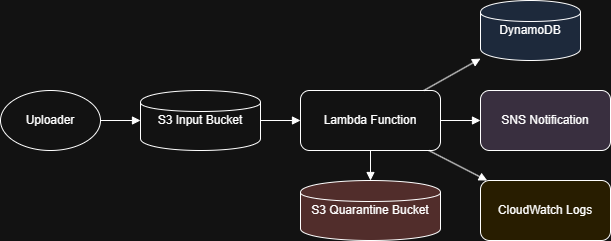

AWS - Silent Scalper
Project Summary
Silent Scalper is my first AWS project! After completing AWS Certified Cloud Practitioner and Certified Solutions Architect - Associate, I felt it was time to go more hands-on and get some practical experience working with these systems before continuing on the certification path. My Silent Scalper is a serverless data pipeline designed to solve two common problems in (inadequately architected) cloud-based systems:
- Wasting money on idle compute (servers sitting idle when there’s no work to be done)
- Crashing during traffic spikes (overloaded infrastructure from sudden file dumps)
This project uses AWS native services to create a responsive, cost-effective solution that automatically processes incoming files with no manual provisioning.
Architecture Overview
Uploader ──▶ S3 Bucket ──▶ Lambda Function
│
┌────────────────┼────────────────┐
▼ ▼ ▼
DynamoDB SNS Notification CloudWatch Logs
│
▼
Quarantine S3 Bucket (on failure)
Key Features
- ✅ Event-driven compute triggered on file upload
- ✅ Scales automatically — no idle infrastructure
- ✅ Writes file metadata to DynamoDB
- ✅ Sends real-time SNS alerts for success or failure
- ✅ Quarantines failed uploads to a separate S3 bucket
- ✅ CloudWatch logs for debugging and monitoring
Tech Stack
AWS Services:
- S3 (file upload + quarantine)
- Lambda (file processing)
- DynamoDB (metadata store)
- SNS (notifications)
- CloudWatch (logs + metrics)
- IAM (roles and permissions)
Runtime: Python 3.12 (AWS Lambda) - Click here to see the full Python script used in this function
How It Works
- A file is uploaded to the
silent-scalper-input-testcaseS3 bucket - S3 triggers a Lambda function
- Lambda extracts metadata: filename, size, timestamp
- The metadata is stored in a DynamoDB table with GSI for easy queries (
SS-FileMetadata) - An SNS topic (
SSAlerts) sends a notification email - If an error occurs, the file is moved to a quarantine bucket (
silent-scalper-quarantine-test) - Logs and alerts are published to CloudWatch
Security & Cost
- Entire project should fit within the AWS Free Tier:
- ✅ 1M Lambda invocations/month
- ✅ 5GB S3 storage
- ✅ 25GB DynamoDB storage
- ✅ 1M SNS publishes
- ✅ 5GB CloudWatch logs
- IAM role for the Lambda function originally used managed policies (for the sake of simplicity) in this test case, but was made to follow a preferable least-privilege principle using an inline policy after confirming function. This is the policy used:

Screenshots


Reflections
This project was a hands-on exploration of real-world AWS architecture patterns. I primarily wanted to finally and actually build something in AWS, but I also wanted it to be practical in the real world - hence the two common issues targeted here: wasteful compute and fragile scaling. Silent Scalper uses serverless tools to build a lean, resilient, and automated system that handles high-volume file ingestion with ease.
Next features I plan to include:
- Adding automated retries from the quarantine bucket
- Integrating with a web dashboard for file tracking
- ~~Logging file types and processing durations for analytics~~ Added! See what was changed in Lambda in this Python file.
Architecture Diagram
